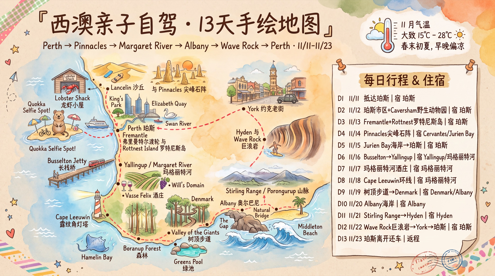

手绘地图
用真实地理关系做成旅行手账风示意图：北上尖峰石阵、向西到罗特尼斯岛、向南进入玛格丽特河和奥尔巴尼，再经内陆巨浪岩回珀斯。

整体行程表
先看总览，再进入后面的单天行程。车程为保守估算，实际以当天导航、道路施工和天气为准。
| 日期 | 路线 | 夜宿区域 | 核心安排 | 驾驶 |
|---|---|---|---|---|
| 11/11 D1 | 抵达珀斯 | 珀斯 | 取车、Elizabeth Quay、Swan River 傍晚散步 | 机场到市区约 25-35 分钟 |
| 11/12 D2 | 珀斯市区 + Caversham | 珀斯 | Caversham Wildlife Park、Kings Park 日落、Northbridge 恢复餐 | 市内与近郊短途 |
| 11/13 D3 | Fremantle + Rottnest | 珀斯 | Fremantle B Shed 渡轮、主聚落 Quokka、Island Explorer / 轻骑行 | 自驾到码头约 35 分钟，岛上无自驾 |
| 11/14 D4 | 珀斯 → Lancelin → Pinnacles | Cervantes / Jurien Bay | 沙丘、Nambung National Park 日落 | 约 260 km / 3.5 小时 |
| 11/15 D5 | Cervantes → Jurien Bay → 珀斯 | 珀斯 | 海岸步道、龙虾午餐、回城休整 | 约 240 km / 3 小时 |
| 11/16 D6 | 珀斯 → Busselton → Yallingup | Yallingup / Margaret River | Busselton Jetty、海边 playground、Yallingup 入住 | 约 260 km / 3.25 小时 |
| 11/17 D7 | Yallingup → Margaret River | Yallingup / Margaret River | Vasse Felix、亲子酒庄午餐、Ngilgi / Mammoth Cave、Surfers Point | 约 90 km / 1.5 小时 |
| 11/18 D8 | Margaret River 环线 | Yallingup / Margaret River | Cape Leeuwin、Hamelin Bay、Boranup Forest、亲子啤酒屋晚餐 | 约 160 km / 2.5 小时 |
| 11/19 D9 | Margaret River → Denmark | Denmark / Albany | Valley of the Giants、Greens Pool | 约 330 km / 4.25 小时 |
| 11/20 D10 | Albany 海岸 | Albany | Gap、Natural Bridge、Middleton Beach | 区域短途约 50-80 km |
| 11/21 D11 | Albany → Stirling Range → Hyden | Hyden | Porongurup / Stirling Range 远眺、内陆乡镇 | 约 380 km / 4.75 小时 |
| 11/22 D12 | Hyden → Wave Rock → York → 珀斯 | 珀斯 | 巨浪岩、约克老街、返城 | 约 350 km / 4.5 小时 |
| 11/23 D13 | 珀斯离开 | 离开 | Lake Monger / City Beach 轻松收尾、还车 | 按航班时间预留 3 小时 |
单天行程
每天保留“早点出发、下午留缓冲、傍晚看光线”的节奏，适合带孩子的自驾家庭。
DAY 0111/11 · 珀斯抵达取车与天鹅河轻适应
＋
取车与天鹅河轻适应
Perth AirportElizabeth QuayBell TowerSwan River
上午/中午
抵达后取车，先确认儿童座椅、导航、离线地图和加油规则；如果红眼航班，直接去酒店寄存。
下午
Elizabeth Quay 与 Bell Tower 轻松散步，孩子可在河边活动，避免第一天安排博物馆式高强度参观。
晚上
在市区或 Northbridge 简单晚餐，采购饮用水、防晒和第二天早餐。
DAY 0211/12 · 珀斯亲子恢复日Caversham 动物园与国王公园
＋
Caversham 动物园与国王公园
Caversham Wildlife ParkNorthbridgeKings ParkBotanic Garden
上午
Caversham Wildlife Park 放在第一整天，亲子反馈比纯市区博物馆更有参与感；想要考拉合照或热门互动，尽量开门前后到。
下午
回 Northbridge 吃越南粉、亚洲简餐或回公寓休息；如果孩子状态好，再去 Kings Park 走短线看城市景观。
晚上
国王公园看日落后早点回酒店，采购饮用水、防晒、帽绳和北上小零食。
DAY 0311/13 · Rottnest Island短途渡轮与 Quokka 日
＋
短途渡轮与 Quokka 日
Fremantle B ShedThomson BayThe BasinIsland Explorer
上午
从 Fremantle B Shed 上船更省时；若要骑行，船票/自行车尽量一起提前订好，下岛再租容易排队。上岛后先在主聚落找 Quokka，不必一开始冲远点。
下午
亲子优先“主聚落 + The Basin/Pinky Beach + Island Explorer 一段”，体力好再短骑；不要把灯塔、West End、浮潜全部塞进同一天。
晚上
16:00 左右回码头候船，确认回程停靠点后再下船；回 Fremantle 后吃海鲜或披萨，不追太晚船班。
DAY 0411/14 · 北上尖峰石阵沙丘、海岸与荒漠日落
＋
沙丘、海岸与荒漠日落
PerthLancelin Sand DunesPinnacles DesertCervantes
上午
沿 Indian Ocean Drive 北上，在 Lancelin 沙丘短停；风大时只拍照不滑沙，避免孩子吃沙。
下午
进入 Nambung National Park，先走 Discovery Centre，再按日落光线开 Pinnacles Desert loop；沙漠段不要压到太晚。
晚上
住 Cervantes 或 Jurien Bay，晚餐选龙虾/简餐；公开笔记反复提醒长途路段袋鼠多，天黑后减少郊外驾驶。
DAY 0511/15 · 海岸回珀斯Jurien Bay 慢游与回城
＋
Jurien Bay 慢游与回城
CervantesJurien Bay JettyLobster ShackPerth
上午
海边散步或参加 Lobster Shack 游览，旺季需提前确认班次；想吃龙虾把午餐锁在 11:00-15:00 之间更稳。
下午
午餐后回珀斯，中途按疲劳程度在 Yanchep 或服务站短休，不为了多打卡继续北上。
晚上
回珀斯补给，洗衣整理南下行李，第二天尽量早出发。
DAY 0611/16 · 南下 Busselton长栈桥与浅海黄昏
＋
长栈桥与浅海黄昏
PerthMandurah 休息Busselton JettyGeographe Bay
上午
从珀斯南下，途中在 Mandurah 或 Bunbury 休息，避免一口气开到孩子烦躁。
下午
Busselton Jetty 小火车和水下观测站二选一即可；亲子反馈里栈桥边大 playground 很加分，建议留 45-60 分钟。
晚上
如果后两天重点在玛河，建议继续到 Yallingup / Margaret River 住，减少第二天折返。
DAY 0711/17 · Margaret River酒庄午餐与洞穴
＋
酒庄午餐与洞穴
Vasse FelixWill's Domain / Swings & RoundaboutsNgilgi CaveSurfers Point
上午
住 Yallingup 时先去 Vasse Felix 或 Cape Naturaliste 一带，成人可安排简短 winery tour，孩子在草地休息更轻松。
下午
午餐优先选带 kids menu / playground 的亲子酒庄，如 Will's Domain 或 Swings & Roundabouts；洞穴选 Ngilgi 或 Mammoth Cave，穿防滑鞋。
晚上
Surfers Point 看冲浪和夕阳，不建议下水；若孩子累了，改去 Cheeky Monkey / Bailey Brewing 这类亲子啤酒屋吃早晚餐。
DAY 0811/18 · 灯塔与海湾澳洲西南角的一天
＋
澳洲西南角的一天
Cape Leeuwin LighthouseHamelin BayBoranup ForestMargaret River
上午
开往 Cape Leeuwin Lighthouse，提前确认导览和风况；这里是印度洋与南大洋交汇的地标，风大时减少登高停留。
下午
Hamelin Bay 只远观野生鳐鱼，保持距离；回程穿过 Boranup Forest。若天气冷，不强行安排 Injidup Natural Spa 涉水。
晚上
回 Margaret River / Yallingup 用餐，优先选择可预订、带户外空间的餐厅，补充第二天跨区长途驾驶的零食和水。
DAY 0911/19 · Denmark / Albany森林树顶与绿池海岸
＋
森林树顶与绿池海岸
Margaret RiverValley of the GiantsGreens PoolDenmark
上午
这天车程较长，建议 8 点前出发，中途在 Manjimup 或 Pemberton 休息，车上备水和零食。
下午
走 Valley of the Giants Tree Top Walk，再到 Greens Pool 看花岗岩海湾；南线笔记普遍提醒海边风大，孩子外套随身带。
晚上
住 Denmark 或 Albany，晚餐从 Fish & Chips、酒馆或家庭餐厅中选轻松方案。
DAY 1011/20 · Albany 海岸南岸风景与历史
＋
南岸风景与历史
The GapNatural BridgeNational Anzac CentreMiddleton Beach
上午
The Gap 与 Natural Bridge 风很强，孩子必须牵好；先走官方栈道，不越过栏杆。
下午
National Anzac Centre 适合雨天或强风替代，随后去 Middleton Beach 放松。
晚上
Albany 镇上晚餐，第二天内陆路程长，提前加满油。
DAY 1111/21 · 内陆到 Hyden山脉远眺与乡镇补给
＋
山脉远眺与乡镇补给
AlbanyPorongurupStirling Range LookoutHyden
上午
离开海岸前在 Porongurup 或 Stirling Range 选择低强度观景，不安排高难度徒步。
下午
穿越内陆到 Hyden，注意手机信号和袋鼠出没，黄昏前抵达。
晚上
住 Hyden，简单晚餐，查看第二天巨浪岩日出或上午光线。
DAY 1211/22 · Wave Rock 回珀斯巨浪岩与 York 老街
＋
巨浪岩与 York 老街
Wave RockHippo's YawnYorkPerth
上午
早些到 Wave Rock，拍照后走 Hippo's Yawn 短线，热起来前结束户外活动；巨浪岩路途远，不建议当天从珀斯硬往返。
下午
经 York 回珀斯，老街短停喝咖啡，长途驾驶中段休息，确认油量后再进城。
晚上
回珀斯还未必需要当天还车，建议保留一晚方便次日机场移动。
DAY 1311/23 · 珀斯离开城市轻收尾与还车
＋
城市轻收尾与还车
Lake MongerCity BeachPerth Airport
上午
按航班时间选择 Lake Monger 看黑天鹅或 City Beach 吃早午餐，不再安排远郊。
下午
加油、整理车内、提前到租车点还车，给家庭安检和退税预留时间。
晚上
若晚班机，机场前只保留商场或咖啡馆等低风险停留。
景点信息
图片之外补充官网、地址、亮点和执行注意，便于出发前逐项核对。
美食信息
优先选择适合家庭、停车相对友好、能代表西澳海岸和农产的餐饮类型。
FREMANTLE
Fish & Chips
Rottnest 日归后最顺路，孩子接受度高。
地址：Fremantle Fishing Boat Harbour, Fremantle WA
亮点：码头氛围、海鲜、返程后不用再进城折腾。
注意：海鸥抢食明显，儿童餐别放桌边。
体验信息
体验只保留和这条路线强相关、适合一家三口执行的项目。
准备与提醒
住宿、航班和租车订单若已确认，可继续补到页面里。
出发前确认
- 国际驾照翻译件、租车主驾驶信用卡、儿童座椅与额外驾驶员。
- Rottnest 往返渡轮、自行车/儿童拖车或 Island Explorer 巴士票。
- Pinnacles 国家公园门票或通票、Caversham、Busselton Jetty、热门亲子酒庄午餐。
- 南部海岸风大，带防风薄外套；内陆长途日备足水、零食和防蝇网。
- 下载离线地图，记录加油站，长途路段避免黄昏后驾驶。
亲子节奏
- 每天只设一个“必须完成”的主景点，其余作为天气和体力弹性项。
- 玛河区域优先住 Yallingup / Margaret River 连住，减少每天来回折返。
- 连续长车程后安排海边、栈桥或市区半天恢复。
- 野生动物只远观，不投喂 Quokka、鳐鱼或海鸟。
- 餐厅尽量订 17:30-18:30，避免孩子太饿和热门时段等位。
英文备用
- Could we have a child seat, please? 请问可以提供儿童座椅吗？
- Is this road suitable for a regular rental car? 这条路普通租车能开吗？
- Do we need to book the tour in advance? 这个导览需要提前预约吗？
- Could we have a table suitable for a child? 可以安排适合带孩子的座位吗？
当地注意
- 澳大利亚左侧行驶，环岛让右，学校区域限速严格。
- 海岸风浪变化快，只在有救生员或明确安全标识的区域下水。
- 多数地方刷卡方便，但小镇停车、洗衣或临时摊位可备少量现金。
- 国家公园步道务必走标识路线，夏季蛇类和晒伤风险都要重视。